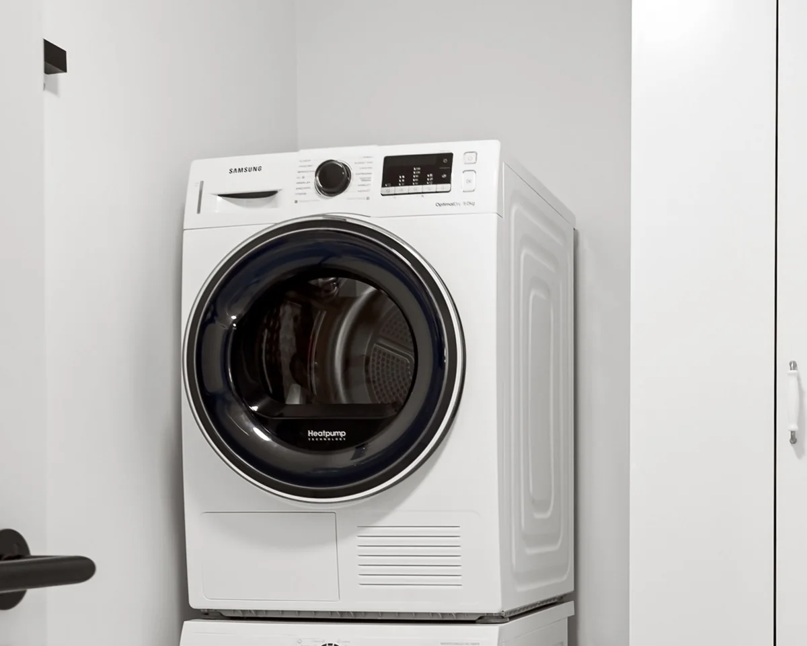

Lint and airflow
Discuss internal lint buildup, the exhaust route and any airflow warning already displayed.

Professional maintenance for household dryers, with attention to lint, airflow, drying performance and accessible operating components.
Local design preview · requests are not sent
Describe the equipment, the installation and what has changed.
Discuss internal lint buildup, the exhaust route and any airflow warning already displayed.
Include longer drying times, changed cycle results and any recent interruption.
The visit scope can include airflow and temperature checks and inspection of operating components. Discuss vent access before work begins.
Useful information for a focused assessment.
A turning drum does not tell the whole story. Describe whether the dryer produces no noticeable heat or whether drying has simply become slower.
Read the guide DRYERCompare the usual cycle result with what changed: longer cycles, damp clothes or a cycle that stops early.
Read the guide DRYERA dark display and a display that responds without starting are different symptoms. Include what the controls do.
Read the guideBoise, Nampa and Caldwell, plus proposed neighboring cities.
City names identify request areas, not confirmed technician coverage. Every visit requires an availability check.
Useful answers before you start a request.
Describe the equipment and installation, the symptoms and the location. Include a model number and access details you already know.
No. This local preview lets you review sample details without sending a request or reserving an appointment.
Have another question?
Start with your city, the appliance and a short description of the problem.
Request Appliance ServiceKitchen & laundry appliances · Treasure Valley · Availability checked first